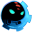

BastionDetalles
 |
|
| Tiempo de juego | 3m 48s |
| Última actividad | 16/1/2026 11:33:48 |
| Añadido | 13/9/2025 21:19:31 |
| Modificado | 10/12/2025 11:24:52 |
| Estado de finalización | Jugado |
| Librería | Playnite |
| Fuente | |
| Plataforma | PC (Windows) |
| Fecha de lanzamiento | 20/7/2011 |
| Puntuación de la Comunidad | 83 |
| Puntuación de la Crítica | 90 |
| Puntuación de usuario | |
| Género | Adventure Indie Role-playing (RPG) |
| Desarrollador | Supergiant Games |
| Editor | Supergiant Games WB Games |
| Característica | Single Player |
| Enlaces | Steam GOG |
| Tag | Texto en Español Voz en Inglés |
Descripción
Si hoy en día flasheamos con ese juegazo que es Hades (2020) es porque 9 años antes, los mismos capos de Supergiant Games rompieron el molde con esta pieza fundamental. Bastion no es un juego, es una experiencia. Es uno de esos títulos que le demostraron al mundo que un equipo indie podía parir algo más épico y con más alma que cualquier tanque de Hollywood.
La magia de este juego tiene un pilar clave: el narrador. Un tipo con un vozarrón gastado por el whisky y el pucho que relata EN VIVO todo lo que hacés. Saltás y el tipo dice "El pibe pega un salto". Te caés como un boludo y te dice "Y se va al joraca... pero vuelve a levantarse". Esta genialidad te mete en la historia de una forma que nunca se había visto, es inmersión pura.
Jugás como "The Kid" después de que "La Calamidad" hiciera mierda el mundo. A medida que avanzás, el escenario se va construyendo bajo tus pies en un espectáculo de arte pintado a mano que es una hermosura. El combate es ágil, las armas son una más zarpada que la otra y todo se siente perfecto al control.
Y la música... uf, la MÚSICA. La banda sonora de Darren Korb es para ponerla en un cuadro, es legendaria por un motivo. Bastion es de esos juegos que te terminan y te dejan pensando, con la certeza de que acabás de vivir algo importante.
Obligatorio. No hay otra palabra.